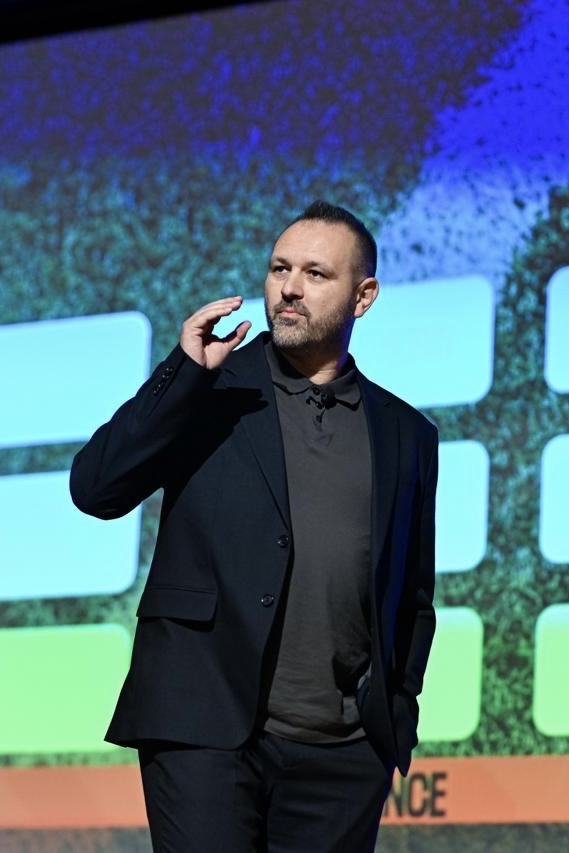

International Football Hub is a locally embedded football, business and activation platform that connects international football expertise with growth markets.
Connecting international football expertise to inspire, develop and grow local football ecosystems and promote international understanding.
International Football Hub gives international football expertise and organisations a permanent, on-the-ground presence in emerging markets.
We help partners connect with key stakeholders, build trusted relationships and identify new opportunities — without the cost and risk of building a local operation from scratch.
In doing so, we serve as both a gateway for international partners and a catalyst for long-term growth and stronger international ties within the local football ecosystem.
International Football Hub provides the partner with a ready-made activation platform — eliminating the need to build a standalone market presence from scratch.
Permanent presence means testing and activating happen together.
Permanent, on-the-ground presence
Targeted showcases, workshops, meetings
Recurring partnerships & revenue
Example activations: coaching workshops · academy programmes · methodology & coach education · brand tours · roadshows · institutional visits.
IFH operates through local partners on the ground in each Territory, acting as its operational representative — real local access, not remote advisory.
IFH provides partners with one clear and reliable communication line throughout the collaboration, coordinating local stakeholders, activities and follow-up.
Every partnership runs on a jointly agreed Activation Plan, reviewed annually — setting out activities, timelines and responsibilities for the year ahead.

A football development professional with an MBA in Football Management and senior experience in academy leadership, football strategy and talent development across Europe and the Middle East.
Let's explore how your organisation can benefit from joining our International Football Hub.
Let Us Know